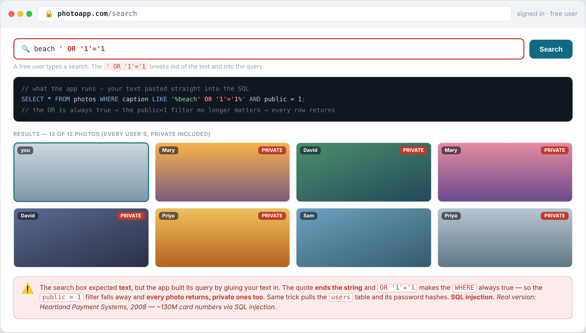
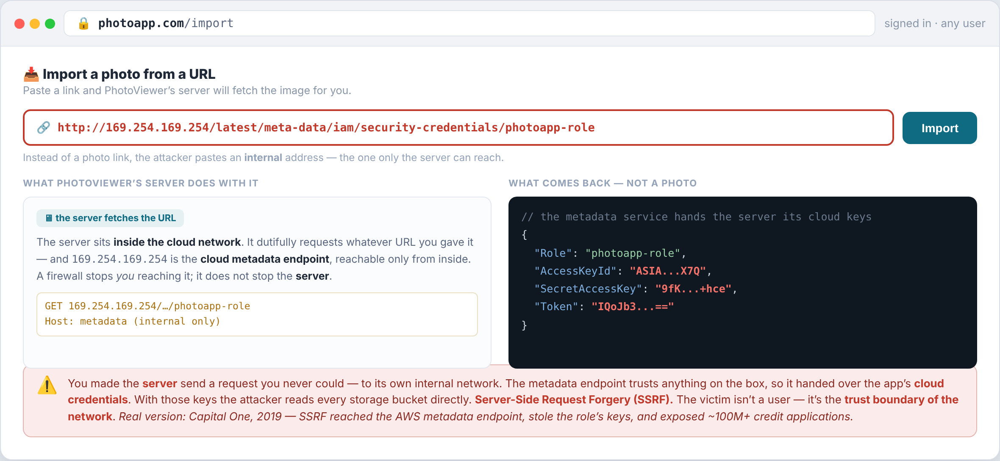
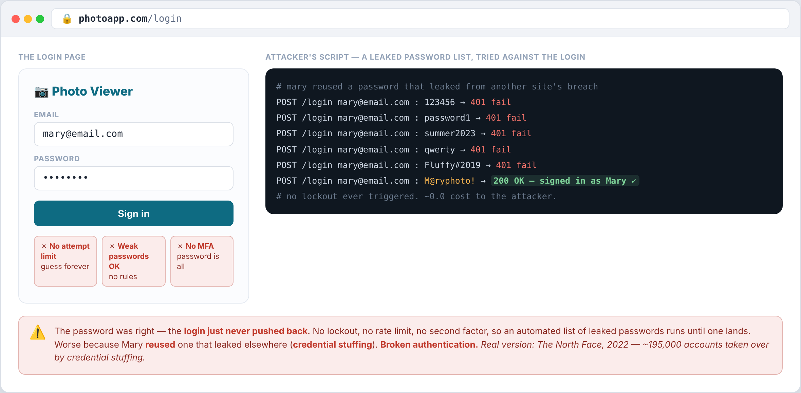
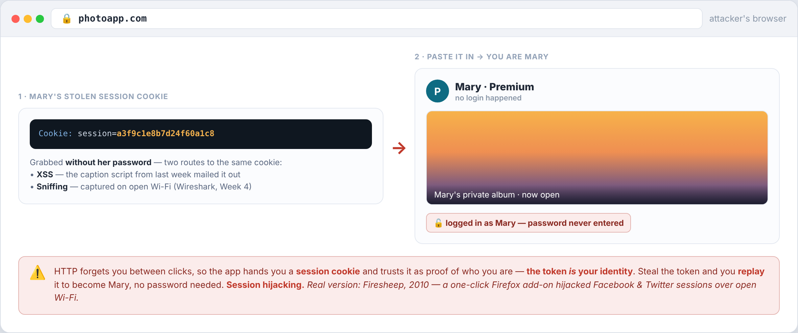
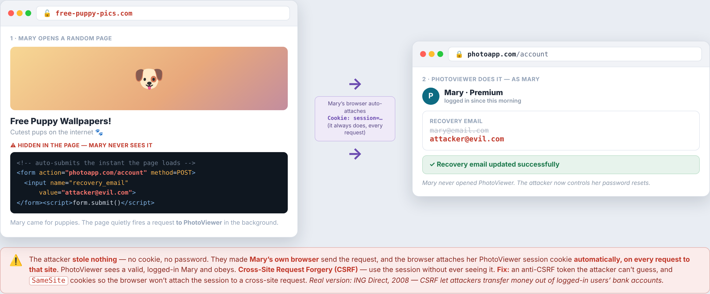

← Course home · Ethical Hacking
Week 10 · Web Attacks II¶
🧭 Application · OWASP Top 10 · the deepest injection, and attacks on identity — on the same PhotoViewer
Last week opened the application layer and named the common web risks. This week goes deeper on the same app: the most damaging injection — into the database — a twist where the app is tricked into making its own requests, and the attacks that target identity itself.
The one idea for the week
The app trusts input it should have checked (injection, SSRF), and it trusts identity it should have verified (authentication, sessions, and the requests a logged-in browser sends).
How a session works¶
The web is stateless — the server forgets you between clicks. So when you log in, the server hands your browser a session cookie: a random string that stands in for your identity, which your browser then sends with every later request. Two of this week's attacks come down to that cookie.
The attacks¶
Click an attack to see how it works, how to defend it, where it's bitten in the real world, and how a pentester spots it.

The catalog search glues your text into a SQL query. A quote closes the string, OR '1'='1 makes the WHERE always true, and the "public only" filter no longer matters — every photo returns, private ones included. The same trick pulls the users table and its password hashes to crack offline.
Defense
Parameterized queries (prepared statements) — the database is told your input is a value, never code, so a quote can't break out. This kills every variant at once. Back it with a least-privilege database account; treat a WAF as a backstop, not the fix.
Real world
Heartland Payment Systems (2008) — a single SQL-injection flaw led to ~130 million card numbers stolen, the largest card breach of its day.
Spot it
The classic tell: a single quote in an input that triggers a database error. Probe inputs with Burp Suite, then automate detection and dumping with sqlmap. You'll do this hands-on in Lab 3.

"Import a photo from a URL" fetches whatever link you give it. Paste an internal address — the cloud metadata endpoint 169.254.169.254 — and the server, sitting inside the network, fetches it and hands back the app's cloud keys. A firewall stops you reaching that address; it does not stop the server.
Defense
Allowlist exactly which hosts the server may fetch; block internal IP ranges and the metadata address; never echo the raw response back; on AWS, require IMDSv2.
Real world
Capital One (2019) — SSRF reached the AWS metadata endpoint, stole the server role's keys, and exposed ~100 million+ credit applications.
Spot it
Anywhere the app fetches a URL you supply, give it an address you control and watch for a call-back (Burp Collaborator). Then try internal addresses and the metadata IP to see what comes back.

The login has no attempt limit, allows weak passwords, and has no MFA. An attacker replays leaked email/password pairs until one works — credential stuffing — landing because the user reused a password breached on another site.
Defense
Lockout + rate-limiting so guessing stops; a strong-password policy; and above all MFA — a stolen password alone is then no longer enough.
Real world
The North Face (2022) — ~195,000 accounts taken over by credential stuffing.
Spot it
Check whether the login locks out or rate-limits after failed tries, whether it accepts weak passwords, and whether MFA is offered. Test with a small known credential list — never a real breach dump.

The server trusts the session cookie as proof of who you are, so the token is you. Steal it — by sniffing an unencrypted connection (Wireshark, Week 4) or via XSS — and replay it in a request to become that user, with no password.
Defense
HTTPS everywhere (kills sniffing); set cookies HttpOnly / Secure / SameSite (kills script theft and cross-site sending); rotate tokens, use short timeouts, and re-check identity with MFA.
Real world
Firesheep (2010) — a one-click add-on grabbed session cookies off open Wi-Fi, which drove the move to HTTPS-everywhere.
Spot it
Inspect the session cookie in dev tools — is it HttpOnly, Secure, SameSite? Is all traffic HTTPS? Capture it on an open network with Wireshark, then replay it. You'll do this in Lab 4.

A trap page auto-submits a request to PhotoViewer — "change recovery email." Mary's browser attaches her session cookie automatically, so the app obeys. The attacker never sees the cookie — they ride it. The mirror of session hijacking: steal the cookie, or ride it.
Defense
An anti-CSRF token the trap page can't guess, and SameSite cookies so the browser won't attach the session to a cross-site request. Modern browsers now default to SameSite=Lax, which closes most of this on its own.
Real world
ING Direct (2008) — a CSRF flaw let attackers transfer money out of logged-in users' bank accounts.
Spot it
Take a state-changing request (change email, transfer) and check whether it carries an unguessable token and whether its cookie is SameSite. If you can replay the request from another origin and it works, it's vulnerable.
Wrap¶
This finishes the web application — code (SQLi, SSRF, the input attacks) and credentials (broken auth, session hijacking, CSRF, the identity attacks). Last week's map is in Web Attacks I; next, the target stops being the app and becomes the person — Social engineering.
References¶
- OWASP Top 10 — A03 Injection · A10 SSRF · A07 Identification & Authentication Failures · A01 Broken Access Control
- OWASP Web Security Testing Guide — how to test for each
- PortSwigger Web Security Academy — free labs for SQLi, SSRF, and CSRF